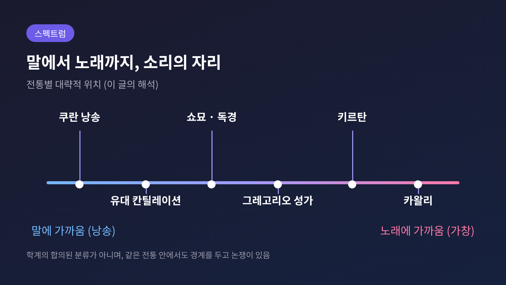

종교 낭송과 노래의 경계, 성가·타즈위드·키르탄이 거룩함을 만드는 법
오늘은 종교 낭송과 노래의 경계에 대해 이야기해 보려 합니다. 그레고리오 성가, 불교 독경, 쿠란 낭송, 수피 사마와 카왈리, 힌두 키르탄, 유대교 칸틸레이션을 나란히 놓고 읽습니다. 요약하면 이렇습니다. 많은 전통이 거룩한 말을 일상의 말투로도, 자유로운 노래로도 두지 않았습니다. 그 사이의 좁은 자리에 소리를 세웠고, 그 자리는 반복과 공동체로 단단해졌습니다.
이 글은 어느 신앙이 옳은지를 가리지 않습니다. 비교종교학의 시선으로 소리가 하는 일만 살핍니다.
■ 말과 노래 사이, 종교가 고른 자리
일상의 말은 뜻을 전합니다. 노래는 감정과 아름다움을 전합니다. 종교의 소리는 둘 사이에 놓이는 경우가 많습니다.

위 도식은 이 글의 해석일 뿐, 학계의 합의된 분류는 아닙니다. 다만 흥미로운 점이 있습니다. 같은 전통 안에서도 어디까지가 낭송이고 어디부터가 노래인지를 두고 오래 논쟁이 이어졌다는 사실입니다.
가장 분명한 사례가 쿠란 낭송입니다. 브리태니커는 쿠란 낭송과 아잔을 음악으로 여기지 않으며, 선율 공식이 정해져 있지 않아 지역마다 다양하다고 설명합니다. 한편 압두라흐만 체틴의 논문(1999)은 선율을 입힌 낭송이 허용되는지가 초기부터 논쟁거리였다고 정리합니다. 아나스 빈 말리크, 이맘 말리크, 아흐마드 빈 한발 등은 글자와 모음, 의미가 흐트러지고 노래처럼 들릴 수 있다고 우려했습니다. 반대편에는 우마르, 이븐 마스우드, 아부 하니파, 샤피이 등이 있습니다. 예언자가 아부 무사의 목소리를 칭찬했다는 전승이 그 근거로 거론됩니다.
체틴의 결론은 이렇습니다. 타즈위드 규칙을 지키는 한 허용되며, 낭송이 구경거리가 되어서는 안 된다는 것입니다.
■ 규칙으로 지키는 소리 — 타즈위드, 칸틸레이션, 쇼묘
소리를 거룩하게 만드는 첫 번째 방법은 규칙입니다.
타즈위드는 '잘 하게 하다'라는 어근에서 왔고, 글자마다 제 몫을 주는 일을 뜻합니다. 9세기 아바스 왕조 시대, 비아랍인 개종자가 늘며 발음 오류가 잦아지자 체계가 다듬어졌습니다. 조음점이 열일곱 곳으로 정리되고, 모음을 늘이는 길이와 비음 규칙이 정해졌습니다. 쿠란 73장 4절의 '타르틸', 곧 천천히 또박또박 읽으라는 구절이 그 바탕으로 인용됩니다. 규칙을 아는 일은 공동체 전체의 의무로 분류됩니다.
유대교의 타아메이 하미크라, 곧 칸틸레이션 기호도 규칙의 소리입니다. 기호 하나하나가 선율 모티프와 이어지지만, 기능은 세 가지로 나뉩니다. 통사, 음성, 음악입니다. 그중 해석에 가장 중요한 것은 통사입니다. 구를 나누고 단어를 묶는 문장 부호의 역할을 먼저 하는 것입니다. '타암'이라는 말 자체가 '맛' 또는 '의미'를 뜻합니다. 브리태니커는 이 기호가 본래 읽기를 명확히 하려는 악센트 표지였으나 훗날 선율 공식을 기억하는 보조가 되었다고 설명합니다. 예전엔 소리가 뜻을 돕는 도구였습니다. 지금은 소리 자체가 의례의 일부입니다.
일본 불교의 쇼묘는 방향이 조금 다릅니다. 천태종과 진언종이 보존해 온 이 독경은 오음 음계로 부르는 단선율 성가입니다. 기보가 만들어졌지만 참고용에 불과했고, 스승에게서 직접 받는 구전이 필수였습니다. 중세에는 일본어 가사의 코시키가 등장해 이해를 도왔고, 그 방식이 노(能)의 요쿄쿠 같은 후대 음악에 영향을 주었다고 합니다.
세 전통의 공통점이 보입니다. 악보나 기호는 있지만 소리의 본체는 사람에게서 사람으로 전해집니다. 유대교 쪽 설명에 따르면 과거에는 손동작으로 선율을 가리켰고, 오늘날에는 대부분 낭독자가 미리 선율을 익힙니다.
■ 텍스트를 따라가는 선율 — 그레고리오 성가와 범패
두 번째 방법은 선율을 말에 복종시키는 것입니다.
그레고리오 성가는 반주 없는 단선율의 라틴어 성가로, 미사와 시간전례에 쓰입니다. 선율은 가사를 따릅니다. 한 음절에 한 음을 붙이는 음절식, 몇 음을 붙이는 네우마식, 한 음절에 여러 음을 길게 얹는 멜리스마식이 있습니다. 알렐루야가 멜리스마의 대표적인 예입니다. 각 선법에는 종지음과 함께 낭송음이 있어, 노래의 중심에 '말하는 음높이'가 자리합니다. 낭송과 노래가 한 곡 안에 함께 있는 셈입니다.
기원은 소스마다 서술이 다릅니다. 브리태니커는 그레고리오 1세 교황(재위 590~604) 때 수집되고 성문화되었다고 적습니다. 위키백과는 카롤링거 시대에 옛 로마 성가와 갈리아 성가가 종합된 결과로 보며, 그레고리오 1세는 기껏해야 선율 집성을 지시한 정도라고 평가합니다. 785~786년 교황 하드리아누스 1세가 로마 성가를 프랑크 궁정에 보냈고, 샤를마뉴가 그것을 제국에 퍼뜨렸다는 대목은 일치합니다. 한계도 있습니다. 가장 이른 기보는 930년경에야 나타나므로, 그 이전의 소리는 추정에 기댈 수밖에 없습니다.
한국 불교의 범패도 말과 노래의 경계에 걸쳐 있습니다. 한문 가사의 안채비, 시구를 높고 굽이치게 부르는 바깥채비, 우리말과 민요풍으로 재가자가 따라 부를 수 있게 한 화청으로 나뉩니다. 진감선사가 당나라에서 배워 와 신라 쌍계사에서 가르쳤다고 전해집니다. 지금은 곡이 소실되고 짧아졌으며, 법당보다 무대에서 공연되는 일이 늘었다고 합니다. 소리를 지키는 일이 쉽지 않음을 보여주는 대목입니다.
■ 반복이 만드는 공동체 — 키르탄과 카왈리
세 번째 방법은 반복입니다. 그리고 반복에는 함께 부르는 사람이 필요합니다.
힌두교의 키르탄은 '서술하다, 암송하다'를 뜻하는 말에서 왔고, 대개 교창 방식입니다. 선창자가 부르면 회중이 응답합니다. 신의 이름과 전설을 되풀이하고, 하르모늄과 타블라, 작은 심벌즈가 곁을 지킵니다. 16세기 벵골에서 차이타냐 마하프라부가 크리슈나 키르탄을 대중화했다고 전해집니다. 뿌리는 기원전 800~700년경 베다 문헌까지 거슬러 올라갑니다. 시크교에서는 구르드와라에서 경전을 라가에 맞춰 부르는 샤바드 키르탄이 이어집니다. 1960년대 이후에는 ISKCON 같은 단체를 통해 서구로도 퍼졌습니다.
수피 전통의 카왈리는 이 구조가 더 또렷합니다. 13세기 아미르 후스로에게서 발전이 비롯되었다고 보며, 성자의 묘소에서 신을 기억하는 디크르와 황홀 상태인 와즈드를 이끌어 내는 것이 목적입니다.
보통 여덟아홉 명의 파티로 이루어지며, 리드 가수 곁에서 보조 가수가 같은 구절을 변주해 되받습니다. 가사는 대체로 고정되고 선율은 즉흥입니다. 템포와 강도가 올라가다 갑자기 끝나는 경우가 많습니다. 가잘 형식은 반복 구절을 품고 있어 디크르에 알맞다고 설명됩니다.
수피 사마, 곧 '듣기'를 둘러싼 입장은 갈립니다. 알가잘리는 마음이 순수한 신자에게는 음악과 춤이 이롭다고 보았습니다. 살라피와 와하비 쪽은 이것을 이단적 혁신으로 비판합니다. 사마에는 마음의 정결, 절제, 상징적 악기만 쓴다는 조건이 따르고, 와즈드는 꾸며서는 안 된다고 합니다. 메블레비 교단의 세마 의식은 아이인이라는 성악·기악 레퍼토리를 쓰며, 최소 가수 한 명과 네이젠, 북, 심벌 연주자가 필요합니다. 의식에 앞서 몇 시간 단식을 한다는 점도 눈에 띕니다. 2008년 유네스코 대표목록에 올랐지만(선포는 2005년), 유네스코 스스로 관광용 단축 공연이 늘어 종교적 의미가 일부 줄었다고 적습니다.
■ 소리는 무엇을 하는가, 다섯 가지 장치
지금까지 본 내용을 정리해 보겠습니다.
불교 독경은 여기에 한 가지를 더합니다. 소스에 따르면 대승에서는 소리가 공양이자 공덕이며, 상좌부의 빠릿따는 위험과 질병을 막는다고 믿어집니다. 염불은 부처의 이름을 되풀이하는 형태로 이어집니다.
목적은 달라도 구조는 낯익습니다. 반복과 정해진 형식, 그리고 함께 하는 사람들입니다.
끝으로 한 마디만 더 드리겠습니다.
여섯 전통을 살피며 저는 소리를 '아름답게 꾸미는 일'보다 '어긋나지 않게 지키는 일'에 가깝다고 느꼈습니다. 글자를 지키고, 뜻을 지키고, 함께 부르는 사람들의 호흡을 지킵니다. 물론 이것은 소리의 기능에 대한 비교 관찰일 뿐, 각 전통이 스스로 말하는 의미를 대신하지는 못합니다.
"거룩한 소리는 말과 노래 사이에서, 반복되며 공동체를 만든다."
다음에 어떤 예배나 법회, 낭송을 듣게 되신다면 이 질문을 떠올려 보시길 권합니다. 이 소리는 지금 무엇을 지키고 있을까요?